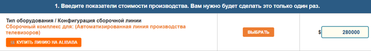
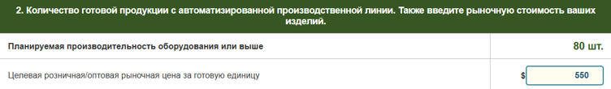
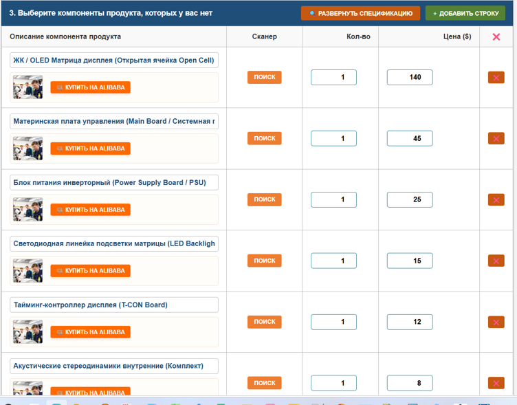
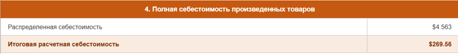
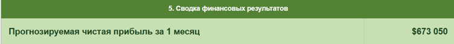
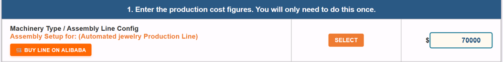
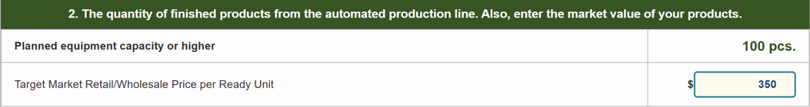
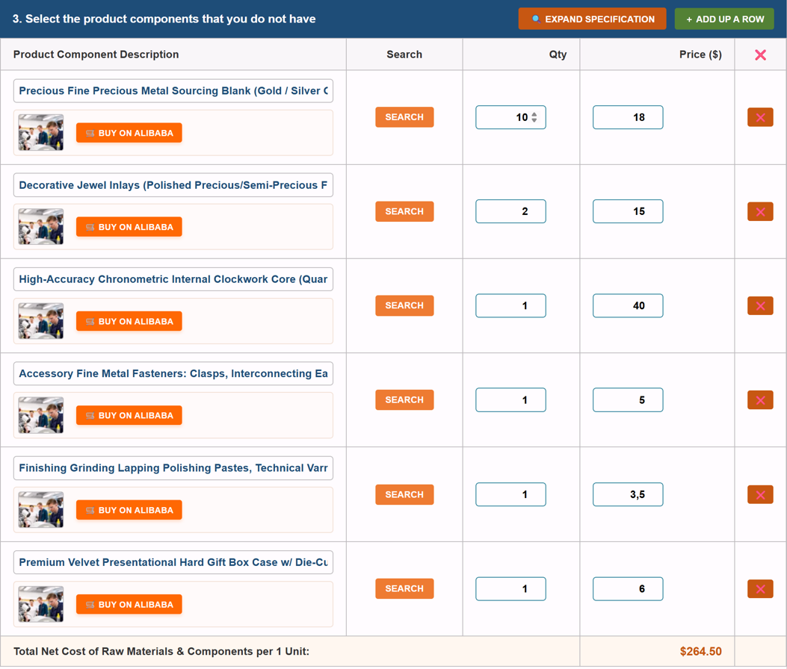
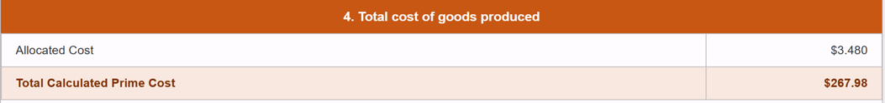
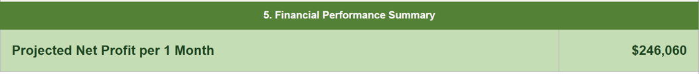

Добро пожаловать в АСУИР Gemini - генератор сверхэффективных производств
Алгоритмы экономики платформы АСУИР Gemini идентичны везде – в любой стране: Цены произведенной продукции: уровень Бангладеш + Зарплата рабочего: $10,000 / мес + доход домохозяйки: $100к – 1000к / мес.
При этом предпринимателю нет необходимости работать самому – в расчетах заложена оплата наемного персонала на уровне $10,000 / мес каждому.
Система позволяет спроектировать производства, обеспечивающие:
- Экспоненциальный рост: экспоненциальный экономический рост ($100,000 - $1,000,000 /мес) домохозяйств, за счет производства и продажи любой готовой продукции.
- Ликвидацию бедности во всех странах, за счет:
- увеличения зарплаты наемного персонала до уровня Швейцарии - $10,000 / месяц;
- Экспоненциального предпринимательского дохода - $100,000 - $1,000,000 / месяц;
- Стоимости производимой продукции на уровне Бангладеш.
🏛 Пример - проектирование производства телевизоров
Настройка сверхэффективной конфигурации производственной линии. Она может осуществляться, как вручную, так и путем выбора того или иного значения из списка (Каталога), предложенного искусственным интеллектом – Gemini.
1/ Прежде всего в разделе «Цель производства» укажите тему.

Раздел 1: Прямые затраты на оборудование, аренду и оплату труда
В этой секции аккумулируются все постоянные операционные расходы предприятия за один рабочий день:
- Аренда помещения (в месяц)
- Количество наемного персонала
- Зарплата на единицу персонала в месяц
Оборудование может выбираться из списка, предлагаемого ИИ Gemini, заканчивая выборку нажатием «интегрировать». Возможна немедленная покупка выбранного образца. Другим вариантом будет просто изменение значения в ячейке стоимости оборудования вручную.

Раздел 2. Выпуск готовой продукции и Правило 10%
Здесь вам потребуется ввести целевую цену продажи готовой продукции (или оставить предложенную системой).

Раздел 3. Размещение составляющих продукции (Спецификация)
Здесь размещается список комплектующих (BOM) предполагаемой к производству продукции. Шаблоны строк формируются путем нажатия кнопки «добавить строку», или автоматически, с разворачиванием самой спецификации комплектующих — путем нажатия кнопки «развернуть спецификацию».

Раздел 4: Полная себестоимость производимых товаров

Раздел 5: Предпринимательский доход и Масштабирование
В этом разделе теперь отображается не только чистая прогнозируемая прибыль в месяц, но и важнейшие бизнес-показатели:
- Срок окупаемости оборудования (ROI): За сколько дней чистая прибыль полностью покроет стоимость купленных вами станков. (Обычно это считанные недели).
- Scale-Up Roadmap: Точное количество таких компактных линий, которое вам нужно запустить (клонировать в том же гараже), чтобы выйти на гарантированный чистый доход в $1,000,000 в месяц.

Как это работает на примере?
К примеру домохозяйка - Х решила выпускать ... станки с чпу. Проверяем, а есть ли в продаже готовая линия? есть нам предлагается 3 варианта, выбираем за $360,000.
Но X - продвинутая кухарка - она будет собирать станки в гараже (не она конечно, а 2 наемных лица), зарабатывая $1,308,570. Для этого ей надо еще раз просмотреть спецификацию, проверить целесообразность собирать станки с заданной производительностью, и выбрать нужные версии комплектующих на Alibaba через встроенный сканер АСУИР.
Приложение – список МКТУ – международной классификации товаров и услуг
| Глобальный сектор МКТУ | Подкатегории и входящие классы продукции |
|---|---|
| Приборы, аппаратура и компьютеры | приборы, инструменты, аппаратура, компьютеры, приборы научные, морские, геодезические, фотографические, измерительные, контрольные. Оборудование для связи. Кассовые и счетные машины. |
| Транспортные средства | транспортные средства, аппараты, перемещающиеся по земле, воде и воздуху (включая легкий транспорт и дроны). |
| Ювелирные изделия и часы | ювелирные, бижутерия и часы, благородные металлы, драгоценные камни, хронометрические приборы. |
| Музыкальные инструменты | музыкальные инструменты и акустические системы. |
| Мебель и деревянные изделия | мебель, столярные изделия, зеркала. Изделия из дерева, пробки, камыша. |
| Ткани и текстиль | ткани, текстильные полотна, одеяла, покрывала, шторы и палатки. |
| Одежда и обувь | одежда (взрослая/детская), обувь, головные уборы и аксессуары. |
⚠️ Внимание! АСУИР Gemini — не средство получения сверхдоходов "из воздуха", а инструмент, показывающий КАК ИМЕННО это сделать математически – делай как я!
- Это, в первую очередь, нивелирование всех производственных расходов (стоимость станков, аренда, зарплаты), чтобы итоговая себестоимость продукции была не выше уровня Бангладеш.
- Как следствие, появляется возможность не работать самому (использовать труд роботов), выплачивая наемному персоналу зарплату на уровне Америки/Швейцарии — $10,000.
- Как следствие, возможность получения дохода домохозяйством в сотни тысяч в месяц.
- Как следствие, возможность резкого увеличения уровня жизни населения.
- Как следствие, возможность тестирования в 1 клик эффективности производства. К примеру, производить дорогие станки выгодно — прибыль более 1 миллиона в месяц! Однако производить их нужно минимум 25 штук в день, это требует квалификации и ангара. А вот выпускать дроны или бижутерию — требует лишь гаража. Платформа сразу покажет, что для окупаемости дронов нужно всего 54 штуки в день. Это превращает в ноль все операционные издержки.
Welcome to ASUIR Gemini - an ultra-efficient manufacturing driver
The economic algorithms powering the ASUIR Gemini platform are globally invariant—they operate identically regardless of the country. The mathematics delivers an economic model where manufactured product pricing aligns with the competitive cost levels of Bangladesh, while personnel salaries are sustained at a robust $10,000 / month, enabling regular homemakers to unlock independent revenue streams ranging from $100,000 to $1,000,000 / month.
Crucially, there is no structural requirement for the entrepreneur to engage in manual labor themselves. The computational matrices intrinsically account for hired operational personnel, factoring in competitive remuneration at an elite level of $10,000 / month each.
The system enables you to design production facilities that offer:
- Exponential Growth: Driven by scale-up economic margins ($100,000 - $1,000,000 / month) for households through the manufacturing and sale of physical commodities.
- Global Poverty Eradication realized by:
- Raising hired staff wages to Swiss/US market levels—$10,000 / month;
- Ensuring exponential entrepreneurial margins;
- Maintaining retail and prime manufacturing costs at the level of Bangladesh.
🏛 Example: Production Planning inside ASUIR
Deploying an ultra-efficient automated assembly line can be done manually or automatically through our Artificial Intelligence database.
First, input your target commodity name into the "Production Goal" field.

Section 1: Direct Machinery, Rental & Labor Overhead
This zone consolidates all operational and fixed daily expenditures of the facility:
- Premises Lease / Rent expenses
- Line Personnel count allocated per shift
- Wage rates per single shift operator
You can search and select your base machinery from Alibaba dynamically using the "Search" scanner module integrated into the table.

Section 2. Production Line Output Metrics & The 10% Rule
In this section, you establish the target wholesale or retail unit sales price.

Section 3. Product Bill of Materials (BOM Component Specifications)
This dynamic grid contains the components required to manufacture your item. The AI will populate this table automatically when you hit "Expand Specification".

Section 4: Total Cost of Manufactured Goods

Section 5: Net Profit & The Growth Roadmap
This final section visualizes your economic success:
- ROI / Payback Period: Shows the exact timeframe (in days) required to fully recoup your capital investment on machinery.
- Scale-Up Roadmap: Provides a distinct operational guide telling the entrepreneur how many exact duplicate lines they must launch to consistently achieve $1,000,000 a month in net profit.

Demonstration Case Study
For example, a homemaker—let's call her "X"—decides to establish a production run for CNC Machine Tools. By checking the database, the system reviews the marketplace and presents optimized machinery line configurations, prompting her to select one priced at $360,000.
As an advanced strategist, X decides to coordinate the assembly inside a spacious garage setup utilizing 2 hired operators, generating a calculated net projection of over $1,000,000. She only needs to verify the BOM specification and procure parts via the built-in scanner linked to Alibaba.
Appendix: Nice Classification System (Core Supported Groups)
| Global Industrial Sector | Sub-Categories & Included Product Classes |
|---|---|
| Apparatus & Computers | Optical, weighing, measuring, signaling, control, and life-saving instruments. Cash registers, data processing equipment, servers, PCs. |
| Vehicles & Transport | Vehicles; apparatus for locomotion by land, air (UAV/Drones), or water. |
| Jewelry & Horology | Precious metals, alloys, fashion jewelry (bijouterie), precious stones, and watches. |
| Furniture & Wood Articles | Furniture, cabinets, mirrors, frames. Articles of wood, MDF. |
| Textiles & Clothing | Fabrics, textiles, bedding covers. Clothing, footwear, and apparel accessories. |
⚠️ Attention! ASUIR Gemini is not a "get-rich-quick" scheme, but a mathematical matrix showing EXACTLY how scale is achieved.
- The core is mitigating all overheads (machinery costs, premises, payroll) so that your final product cost meets the baseline of underdeveloped nations.
- Consequently, you unlock the structural freedom to step away from manual labor, while paying your staff premium salaries (e.g., $10,000/mo).
- This ensures high household incomes and helps elevate global living standards.
- ASUIR gives you 1-click viability testing. For instance, heavy industrial machinery yields $1M/mo, but requires an output of 25 massive units per day (hard for a simple household). But compiling FPV Drones requires only 54 small units a day—perfect for a compact garage setup with 0 operational friction!